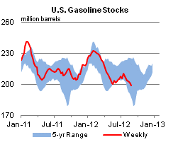

Released: September 6, 2012
Next Release: September 12, 2012
What is Driving U.S. Gasoline Consumption?
The Labor Day holiday marks the end of the peak driving season in the United States and provides an opportunity to review year-to-date gasoline consumption. U.S. Energy Information Administration (EIA) current data indicate gasoline consumption in the first half of 2012 was 0.3 percent lower than in the comparable 2011 period. Economic growth, gasoline prices, and vehicle fleet efficiency are key determinants of gasoline use. So far in 2012, year-over-year economic growth that would generally lead to increased gasoline consumption has been more than offset by increases in retail gasoline prices and higher fuel efficiency of the in-use vehicle fleet.
Prior to February 2012, the United States had consumed less gasoline year-over-year for 13 out of 15 months since November 2010 (Figure 1). In 2011, U.S. gasoline consumption decreased on average almost 240,000 barrels per day (bbl/d), a 2.7-percent reduction from its 2010 level. Consumption continued to weaken, but at a slowing rate, into the first quarter of this year, declining by about 110,000 bbl/d (1.3 percent) from the comparable year-earlier level.

In February 2012, however, almost 20,000 bbl/d more gasoline was consumed than in February 2011, the first year-over-year increase in 11 months. While gasoline consumption through June was slightly lower year-over-year, consumption in the second quarter increased by almost 60,000 bbl/d compared with 2011.
Real GDP for the first six months of 2012 is estimated to be 2.3 percent higher than for the same period in 2011. According to EIA's Short-Term Energy Outlook (STEO) model, the short-term income elasticity for total vehicle miles traveled by light- and heavy-duty vehicles together is about 0.58 (meaning a 1-percent increase in income results in a 0.58-percent increase in miles traveled). This elasticity estimate suggests motor fuel consumption should have been 1.3 percent higher this year than in the same period in 2011, assuming no year-over-year change in fuel prices, the efficiency of the vehicle fleet and the light-duty vehicle share of total travel.
In its STEO model, EIA estimates the short-term elasticity of vehicle miles traveled with respect to the price of gasoline to be about -0.04 (a 1-percent increase in prices leads to a 0.04 percent decline in highway travel). The average pump price of regular-grade gasoline during the first six months of 2012 was 3.3 percent higher than the same period last year. Motor gasoline consumption would therefore have been slightly more than 0.1 percent lower than in 2011, assuming no year-over-year change in economic activity or improvement in the average efficiency of the vehicle fleet. Combined, the estimated net effect of income and price changes and their respective elasticity estimates during the first half of 2012 imply a 1.2-percent increase in gasoline consumption over the comparable year-ago period assuming a constant share of light-duty vehicle travel.
A rough estimate of average gasoline use per mile traveled, a measure of the efficiency of the in-use vehicle fleet, can be obtained by dividing total gasoline consumption reported by EIA by preliminary total highway miles travelled reported by the Federal Highway Administration. Based on this measure, the implied average fuel efficiency of the in-use light-duty vehicle fleet rose by roughly 1.1 percent in the first half of 2012 versus the comparable year-ago period. Efficiency gains likely reflect both increasingly stringent Corporate Average Fuel Economy (CAFE) standards that were implemented for light-duty trucks starting in model year 2008 and for passenger cars starting in model year 2011 and consumer vehicle choices in an era of higher gasoline prices.
The net effect of the income, price, and fuel efficiency impacts as modeled by EIA implies almost flat year-over-year gasoline consumption. Keeping in mind that measures of freight activity suggest some actual decline in the light-duty vehicle share of total vehicle travel between the first half of 2011 and the first half of 2012, the STEO modeling appears to be roughly consistent with, the 0.3-percent year-over-year decline in gasoline use reflected in EIA's current data for January through June 2012.
Hurricane Isaac's Impact Seen in Latest Weekly Data
The impact of Hurricane Isaac on the U.S. petroleum industry is easily detectable in the weekly petroleum supply data for the week ending August 31, released earlier today. Data showed that U.S. crude oil production fell by 772 thousand bbl/d compared with the prior week, as much of the production in the Gulf of Mexico was shut in during most of last week. Additionally, petroleum imports into the Gulf Coast (PADD 3) also dropped considerably (about 1.4 million bbl/d) compared with the previous week. Partly offsetting the drop in crude oil production and imports was a noticeable drop in refinery crude oil inputs (678 thousand bbl/d). However, the drop in refinery inputs was much less than the drop in production and imports of crude oil, so many companies had to draw down crude oil inventories to make up for the loss in supply, causing U.S. crude oil inventories to fall by 7.4 million barrels, with almost all of the drop (7.1 million barrels) seen in PADD 3.
Unlike the drop in crude oil production, petroleum imports, refinery inputs, and crude oil inventories, keen analysts will note that reported petroleum product exports are unchanged compared with the prior week, despite the likelihood that exports from the Gulf Coast were also partly curtailed due to Hurricane Isaac. This is because EIA does not survey exporters, but instead estimates weekly exports using models driven by monthly data, which means that these estimates only change once a month. While EIA could try to adjust the estimates to account for the impact Hurricane Isaac may have had on exports during the week ending August 31, such adjustments would be little more than educated guesses based mostly on anecdotal information. While we realize that exports are likely to be somewhat overstated in the latest weekly report, in subsequent weeks the reported export estimates are likely to be similarly understated as exporters seek to make up for the days affected by Hurricane Isaac. In the end, we expect that Hurricane Isaac will not significantly affect cumulative petroleum product exports over last week and the next several weeks.
Gasoline and diesel fuel prices increase for the 9th consecutive week
The U.S. average retail price of regular gasoline increased seven cents this week to $3.84 per gallon, 17 cents per gallon higher than last year at this time. Prices have increased in all regions of the Nation for the last two weeks. The East Coast, Gulf Coast, and Rocky Mountain region prices all increased more than six cents from last week, to $3.81 per gallon, $3.65 per gallon, and $3.64 per gallon, respectively. The Midwest price saw the largest increase, at 10 cents, to reach $3.88 per gallon. The West Coast price remains the highest in the Nation at $4.07 per gallon, an increase of three cents from last week.
The national average diesel fuel price increased four cents to $4.13 per gallon, 26 cents per gallon higher than last year at this time. Prices increased in all regions of the Nation for the fifth consecutive week. For the second straight week, the largest increase was on the West Coast, where prices rose seven cents to $4.42 per gallon. The Rocky Mountain average price is $4.22 per gallon, up seven cents from last week. On the Gulf Coast, the average diesel price is up five cents to $4.03 per gallon. The price on the East Coast increased three cents to $4.10 per gallon. Rounding out the regions, the Midwest price had the smallest increase for the third consecutive week, rising two cents to $4.07 per gallon.
Propane inventories continue to rise
Total U.S. stocks of propane continued a seasonal build last week, adding 0.8 million barrels of new inventory to end at 72.5 million barrels, 18.9 million barrels (35 percent) higher than a year ago. The Gulf Coast region led the gain with 0.5 million barrels of new stocks. Meanwhile, the East Coast, Midwest and Rocky Mountain/West Coast regions each added 0.1 million barrels of propane. Propylene non-fuel-use inventories represented 6.9 percent of total propane inventories.
Text from the previous editions of This Week In Petroleum is accessible through a link at the top right-hand corner of this page.
| Retail Data | Change From Last | Retail Data | Change From Last | ||||
| 09/03/12 | Week | Year | 09/03/12 | Week | Year | ||
| Gasoline | 3.843 | Diesel Fuel | 4.127 | ||||
|
|||||||||||||||||||||||||||
| *Note: Crude Oil Price in Dollars per Barrel. | |||||||||||||||||||||||||||
|  | |||||||
| Stocks Data | Change From Last | Stocks Data | Change From Last | ||||
| 08/31/12 | Week | Year | 08/31/12 | Week | Year | ||
| Crude Oil | 357.1 | Distillate | 127.1 | ||||
| Gasoline | 198.9 | Propane | 72.496 | ||||